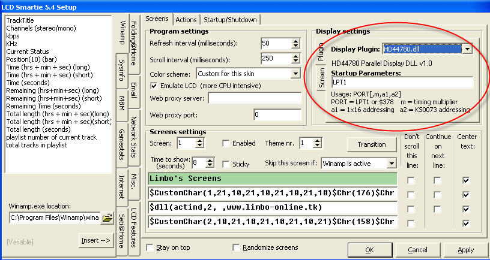

Instructions
Main Window
Below is an image showing the main information shown by the main window of LCD Smartie:
The Virtual display shows approxiately what will appear on the LCD/VFD. It does not currently show graphic characters.
Below is an image showing the main 'buttons' of LCD Smartie:
When LCD Smartie is minimized it will appear in the system tray:
A menu is accessible by clicking on this icon.
Setup Window
Below is an image of the setup screen, highlighted in red are settings for configuring LCD Smartie for your display. 
LCD Settings
Step by step instructions for setting up your display are available:
- Crystalfontz serial display setup.
- Parallel (HD44780 compatible) display setup.
- Matrix Orbital serial display setup.